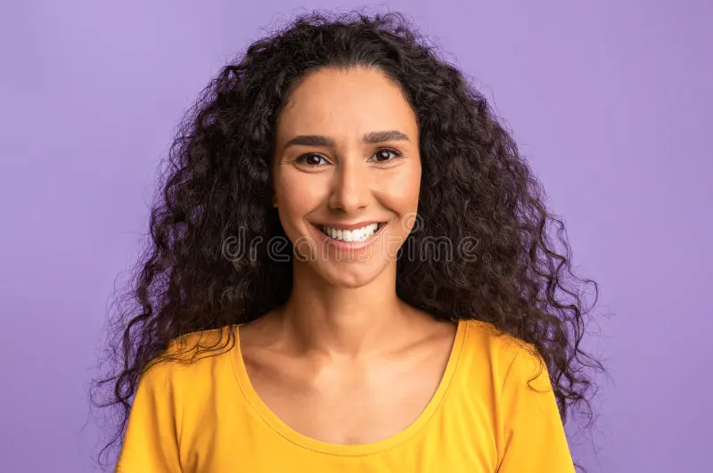

Skal din virksomhed være den næste?

“ Refusionsportalen hjalp os med at holde styr på vores refusioner igennem perioder med stor
sygdom. Efterfølgende har vi regnet på, at vi har sparet over en halv million om året! ”
– Alice Andersen, CEO hos Danske Spil

“ Da vores lønansvarlige gik på pension tidligere end forventet, stod vi med håret i postkassen.
Refusionsportalens hjælp var guld værd, både i starten og senere i processen da vi gik tilbage
til at køre in-house. ”
– Bob Hansen, HR Manager hos Københavns Kommune

“ Som lille virksomhed har vi haft fokus alle andre steder end løn og refusioner. Vi faldt
tilfældigt over Refusionsportalen og har fået øjnene op for, hvor mange penge der er at spare.
Og vi kan stadig fokusere på det, vi gør bedst. ”
– Clara Nielsen, Lead Quant Developer hos CET